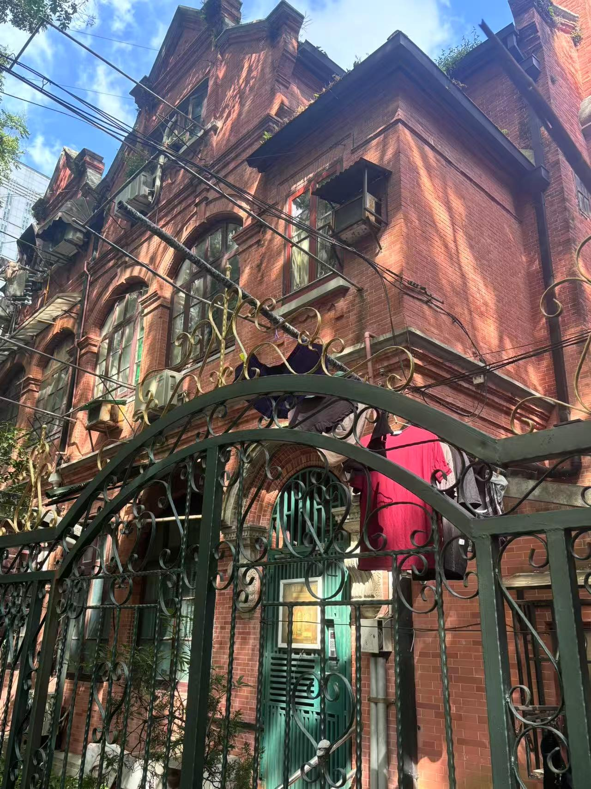
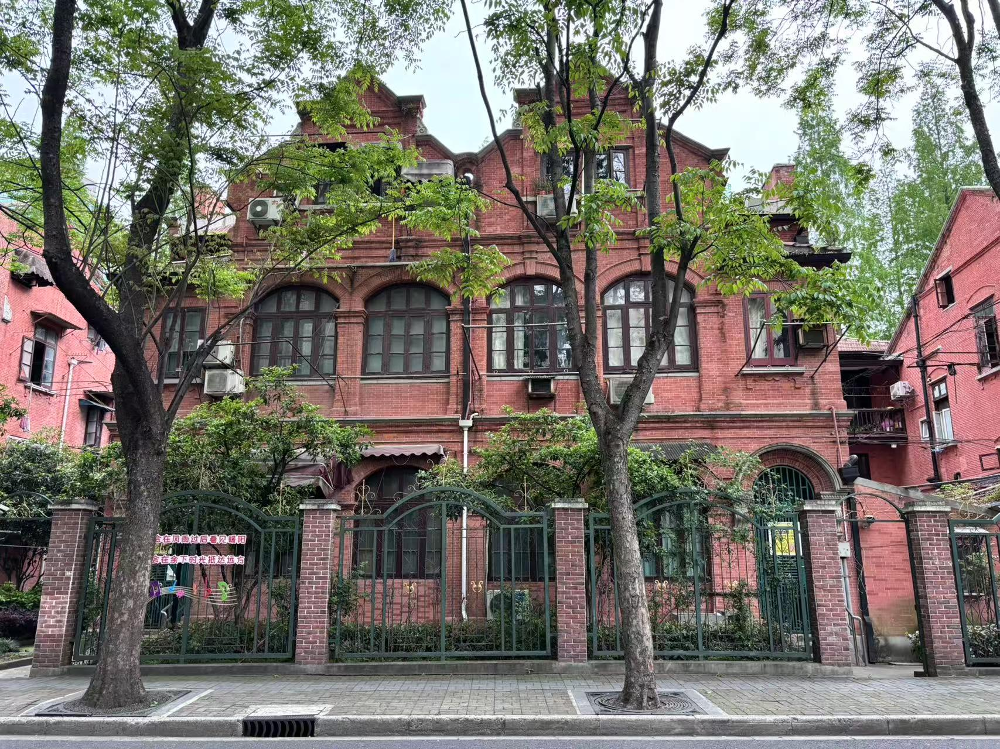
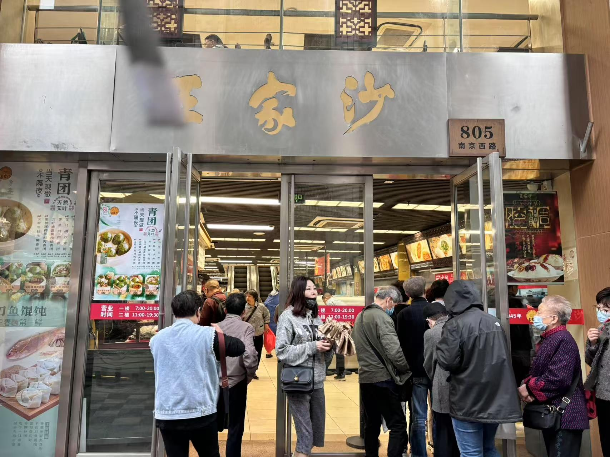

中国劳动组合书记部旧址陈列馆
中国劳动组合书记部旧址陈列馆位于上海市静安区东北角，成都北路南北高架旁。建于1911年，占地面积为273m²，建筑面积289m²，砖混结构二层石库门建筑。
上海"红色之源"之一的中国劳动组合书记部成立于1921年8月11日，是中国共产党公开领导工人运动的第一个总机构，是中华全国总工会的摇篮，是中国工人运动的发祥地。
作为党公开从事工人运动的总机关，劳动组合书记部成立后，创办了机关报《劳动周刊》，向读者揭示中国工人在帝国主义、封建军阀和资本家三重压迫下的悲惨生活，及时报道各地工会活动和工人的罢工斗争，为工人阶级指出联合起来争取自身解放和人类解放的道路。
1922年5月，书记部编印出版《马克思纪念册》和《劳动运动史》两本小册子。在槟榔路（今安远路）工人半日学校旧址创办上海第一工人补习学校，培养工会活动积极分子。成功组建上海烟草工人会、上海纺织工会浦东分会等产业工会。
1922年发起召开第一次全国劳动大会，162名代表参会代表百余个产业工会的30万会员。大会确立了书记部在全国工人运动中的领导地位。在书记部领导下，掀起了中国工人运动的第一个高潮，十三个月内全国发生罢工100余次。
1959年被列为市级文物保护单位，1999年在成都北路893弄重建陈列馆，2009年被命名为"上海市爱国主义教育基地"。现址完整保留石库门建筑特色，通过大量珍贵文物、历史照片和多媒体展示，生动再现中国共产党早期领导工人运动的光辉历程。
资料来源：
- 上海红色文化资源网
- 百度百科
- 新民网
- 人民网
发布时间：2025-05-15
浏览 3289 次